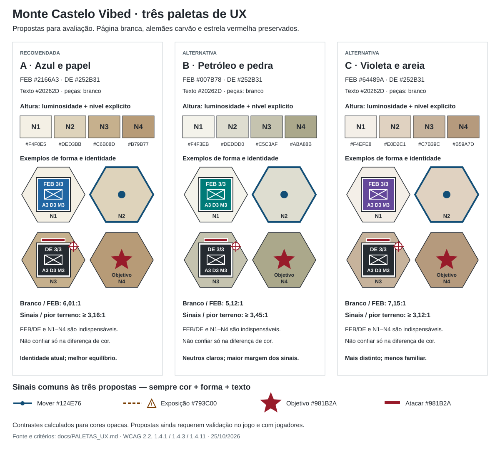
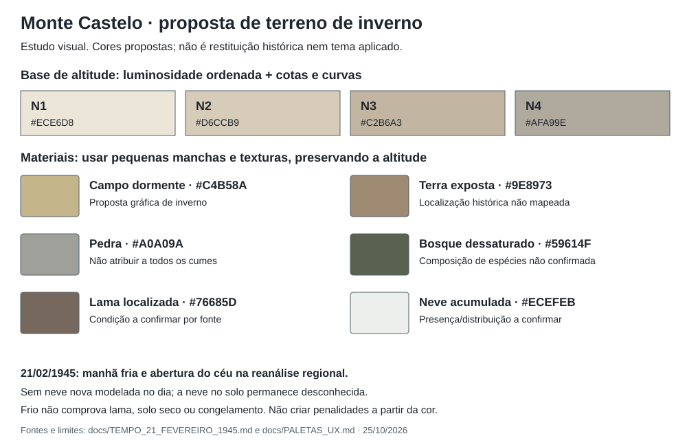

Cores do Monte Castelo Vibed: auditoria e três opções
Análise de 25/10/2026. Recomendação: opção A, azul e carvão com relevo em tons de papel. Mantém a identidade atual, a página branca, os alemães escuros e a estrela vermelha no centro dos objetivos. Escurece os sinais de ação e melhora a leitura do relevo sem transformar o mapa em um conjunto de cores concorrentes.
As três propostas foram implementadas como presets do popup Aparência na v0.1.21; o usuário pode ajustar cada cor separadamente. A comparação visual mostra as três opções em fundo branco. As amostras são propostas, não capturas da aplicação.
O que funciona e o que precisa melhorar
Foram lidos app.ts, template.html e as regras finais de style.css. O começo da folha ainda contém cores escuras antigas, mas regras posteriores definem a apresentação clara atual. No mapa, a altitude tem quatro preenchimentos, curvas de nível e rótulos. As peças já mostram FEB/DE e símbolos militares; isso é uma boa base para identificação sem depender só da cor. A estrela vermelha central distingue objetivos, enquanto alvos de ataque recebem barra e contorno vermelhos.
| Elemento atual | Contraste calculado | Avaliação |
|---|
Branco sobre FEB #226BA4 | 5,66:1 | Boa combinação para texto pequeno; o tamanho real ainda precisa ser legível. |
Branco sobre DE #30363D | 12,20:1 | Boa legibilidade. Preservar a identidade escura. |
Altitude #495C3D88, composta sobre N1–N4 | 2,34 / 2,16 / 1,90 / 1,59:1 | Insuficiente para texto normal. As 7 unidades SVG tornam a leitura ainda mais frágil ao reduzir o tabuleiro. |
Contorno de movimento #257BB7 sobre N1–N4 | 3,97 / 3,19 / 2,31 / 1,52:1 | Perde visibilidade nas maiores alturas. |
Contorno de exposição #C46B16 sobre N1–N4 | 3,34 / 2,68 / 1,94 / 1,28:1 | O aviso mais importante fica mais fraco justamente nas encostas escuras. |
Vermelho de ataque #D12E3D sobre N1–N4 | 4,38 / 3,51 / 2,55 / 1,67:1 | Precisa de cor mais escura e separação do fundo/peça. |
Vermelho de objetivo #C92F37, antes da opacidade | 4,63 / 3,71 / 2,69 / 1,77:1 | Usar preenchimento opaco; a estrela atual tem opacidade 0,82 e contraste ainda menor contra o terreno. |
N1–N4 atuais: #F4EFDF, #E9D6A7, #D1B48C, #BD8B4F. Os valores dos contornos são das cores sólidas declaradas, antes de filtros, suavização de borda e sobreposição de camadas; a regra de movimento aplica também brilho. Não são medidas de pixels da tela. Para a altitude, a transparência 88 foi composta sobre cada preenchimento antes do cálculo.
O maior ganho vem de hierarquia: fundo discreto; relevo ordenado por luminosidade; peças e textos firmes; sinais de ação distintos por forma. Não é necessário aumentar a saturação do mapa inteiro. A estrela indica um lugar permanente e a barra indica uma ação possível: mesmo quando ambas são vermelhas, suas formas e seus rótulos devem impedir ambiguidade.
Três paletas completas
Todas mantêm alemães em carvão, página branca e estrela vermelha. As cores semânticas comuns permitem comparar a identidade e o relevo sem reaprender as ações. Texto secundário #52606A serve para a página branca; no mapa, usar sempre o texto principal, inclusive na altitude.
| Função | A · Azul e papel — recomendada | B · Petróleo e pedra | C · Violeta e areia |
|---|
| Página e painéis | #FFFFFF | #FFFFFF | #FFFFFF |
| Texto principal / altitude / linha externa das peças | #20262D | #20262D | #20262D |
| Texto secundário na página branca | #52606A | #52606A | #52606A |
| Peça FEB | #2166A3 | #007B78 | #64489A |
| Peça DE | #252B31 | #252B31 | #252B31 |
| Texto e símbolos dentro das peças | #FFFFFF | #FFFFFF | #FFFFFF |
| Terreno N1 · vale | #F4F0E5 | #F4F3EB | #F4EFE8 |
| Terreno N2 · encosta | #DED3BB | #DEDDD0 | #E0D2C1 |
| Terreno N3 · crista | #C6B08D | #C5C3AF | #C7B39C |
| Terreno N4 · cume | #B79B77 | #ABA88B | #B59A7D |
| Objetivo · estrela central opaca | #981B2A | #981B2A | #981B2A |
| Ataque disponível · barra + mira | #981B2A | #981B2A | #981B2A |
| Movimento legal · contorno contínuo + ponto | #124E76 | #124E76 | #124E76 |
| Exposição a fogo · contorno tracejado + triângulo ! | #793C00 | #793C00 | #793C00 |
| Curvas de nível essenciais | #793C00 | #793C00 | #793C00 |
| Foco / seleção · linha externa + separador interno | #20262D + #FFFFFF | #20262D + #FFFFFF | #20262D + #FFFFFF |
A — melhor equilíbrio. O azul continua reconhecível para quem já joga; o carvão mantém a preferência para a defesa alemã. O relevo quente preserva o aspecto de mapa de campanha. É a mudança mais fácil de aprender. O azul de movimento deve ser acompanhado de contorno e ponto, pois também pertence à família da FEB.
B — alternativa mais sóbria. O petróleo destaca a FEB sobre terreno quase neutro e oferece a melhor margem de contraste para sinais nas áreas altas. Troca o azul conhecido por um tom entre azul e verde, exigindo atualização consistente de exemplos e legendas. Não deve ser tratado como uma solução universal para daltonismo.
C — alternativa mais distinta. O violeta afasta a FEB das cores terrosas e dos sinais vermelhos/alaranjados. Tem a melhor relação branco/FEB das três. A associação militar é menos familiar, e a distinção de violeta e carvão em tons de cinza é a menor das opções; FEB/DE e as bordas continuam obrigatórios.
Contraste das propostas
| Par medido | A | B | C |
|---|
| Branco / FEB | 6,01:1 | 5,12:1 | 7,15:1 |
| Branco / DE | 14,30:1 | 14,30:1 | 14,30:1 |
| Texto principal / branco | 15,26:1 | 15,26:1 | 15,26:1 |
| Texto secundário / branco | 6,48:1 | 6,48:1 | 6,48:1 |
| Texto principal / N4, pior terreno | 5,79:1 | 6,32:1 | 5,73:1 |
| Movimento / N4, pior terreno | 3,35:1 | 3,66:1 | 3,32:1 |
| Estrela ou ataque / N4, pior terreno | 3,16:1 | 3,45:1 | 3,12:1 |
| Exposição ou curva / N4, pior terreno | 3,24:1 | 3,54:1 | 3,21:1 |
| Preenchimento FEB / preenchimento DE | 2,38:1 | 2,79:1 | 2,00:1 |
| Contraste entre níveis de terreno adjacentes, faixa | 1,25–1,41:1 | 1,23–1,36:1 | 1,30–1,37:1 |
As três propostas oferecem pelo menos 4,5:1 nos pares de texto indicados e 3:1 nos sinais contra os quatro terrenos, usando cores opacas. Isso não declara conformidade WCAG do jogo: tamanho, foco, teclado, estados, sobreposições, zoom, disposição e outras cores precisam de avaliação própria. Níveis adjacentes e facções não têm 3:1 entre si; essas diferenças de preenchimento não podem ser a única informação.
Uma peça azul ou petróleo também não chega a 3:1 contra N4. Recomenda-se um contorno externo #20262D e um separador interno branco: a linha escura se destaca do mapa, e a branca se destaca do preenchimento. Na barra de ataque sobre DE, o vermelho sozinho não oferece separação suficiente; manter separador branco e forma de mira. Para seleção e foco, usar cantos ou anel duplo visível, sem depender só de halo difuso.
Daltonismo e leitura sem cor
Nenhuma combinação dispensa redundância. As propostas não foram simuladas em um modelo de deficiência de visão cromática; os pontos abaixo são riscos conhecidos a verificar, não resultados de teste com usuários.
| Condição | Risco no tabuleiro | Informação que deve sobreviver |
|---|
| Protanopia / protanomalia | Vermelhos podem parecer escuros; vermelho e laranja podem se aproximar. | Estrela para objetivo, barra + mira para ataque, tracejado + ! para exposição; todos com legenda em palavras. |
| Deuteranopia / deuteranomalia | Tons vermelhos, alaranjados e de vegetação podem perder diferenciação. | Exposição nunca se resume a uma borda de outra cor; objetivo e mata têm formas distintas. |
| Tritanopia / tritanomalia | Diferenças entre famílias azul/verde e entre alguns tons quentes se alteram. | FEB/DE permanentes; seleção com cantos/anel; movimento com ponto e contorno contínuo. |
| Tons de cinza / pouca saturação | Facções e sinais com luminosidade próxima podem se confundir. | Letras das facções, formas das ações, N1–N4 e curvas cotadas; nenhuma decisão depende de nomear uma cor. |
Para a implementação futura:
1. Identidade: manter FEB/DE visíveis em todas as peças, além dos símbolos de infantaria/artilharia. A seleção deve ter um marcador próprio; a cor da facção permanece estável.
2. Altura: apresentar N1, N2, N3 ou N4 legível em cada hexágono, com curvas cotadas e legenda ordenada. Escurecer o texto para #20262D, retirar a transparência e dimensionar para cerca de 12–14 px efetivos na tela. O mínimo deve ser verificado no zoom menor e no celular; unidades SVG isoladas não garantem esse tamanho. Mostrar a altitude exata também no painel ao tocar/focar o hexágono. Se houver conflito de espaço, preservar o nível no mapa e levar o texto longo para o painel.
3. Ações: movimento = contorno contínuo e ponto; exposição = tracejado e triângulo !; ataque = barra e mira; objetivo = estrela central. A legenda deve dizer “Mover”, “Exposto a fogo”, “Atacar” e “Objetivo”, com as formas correspondentes. “Sem exposição prevista” descreve a previsão atual; não prometer segurança absoluta.
4. Sobreposição: preservar a leitura do objetivo quando uma unidade o ocupa, por exemplo com pontas da estrela/anel visíveis e indicação no painel. Não ocultar a condição de exposição ao selecionar um hexágono.
5. Feedback: anunciar ação disponível, exposição e resultado em texto, além do desenho; nomes acessíveis devem incluir esses estados. Instruções como “destino azul” ou “inimigo com barra vermelha” devem também descrever a forma e a ação.
6. Validação: testar a proposta em protanopia, deuteranopia, tritanopia e tons de cinza, nos zooms utilizados e em celular. Avaliar identificação de facção, ordem das alturas, objetivo, movimento, ataque e exposição. Simuladores ajudam a detectar problemas; pessoas com deficiência de visão cromática continuam sendo a melhor verificação de usabilidade.
Critérios e fontes
As relações foram calculadas com luminância relativa sRGB: linearização de cada canal (c/12,92 até 0,04045; acima disso, ((c+0,055)/1,055)^2,4), L = 0,2126R + 0,7152G + 0,0722B, contraste (L maior + 0,05)/(L menor + 0,05). Resultados arredondados a duas casas; a avaliação dos limites deve usar o valor sem arredondar.
- WCAG 2.2 · 1.4.1 Uso de cor: cor não pode ser o único meio visual de transmitir informação, ação ou estado.
- WCAG 2.2 · 1.4.3 Contraste mínimo: 4,5:1 para texto normal; 3:1 para texto grande, definido pelo critério como 18 pt ou 14 pt em negrito. Os números pequenos das peças não são texto grande.
- WCAG 2.2 · 1.4.11 Contraste não textual: 3:1 contra cores adjacentes para partes visuais necessárias de componentes e objetos gráficos, observadas as exceções do critério. Não exige 3:1 entre todos os preenchimentos decorativos; se a cor codifica altura necessária, números, curvas e outras pistas devem tornar a informação acessível.
Fontes oficiais consultadas em 25/10/2026. Esta é uma auditoria de cores por leitura do código e cálculo dos pares; não inclui teste de interação, validação de todos os estados ou pesquisa com jogadores.
Terreno de inverno e tempo em 21 de fevereiro de 1945
Revisão em 25/10/2026, após pedido do autor. A avaliação considera a pesquisa meteorológica já documentada e os limites da base geográfica moderna. A cor de um solo histórico específico não foi medida; os códigos abaixo são propostas de desenho, não cores extraídas de fotografias de 1945.
Evidências e implicações visuais
A reanálise regional ERA5 indica −8,3 °C e 94% de nuvens às 06h, −4,8 °C e 47% às 09h, cerca de −0,5 °C e céu aberto ao meio-dia e −5,4 °C às 18h. Não modela precipitação ou neve nova no dia. A profundidade de neve não foi obtida: ausência de neve nova não significa ausência de neve acumulada. A célula tem aproximadamente 25 km e não resolve encostas. O nascer do sol calculado é 07h05; o início às 06h não deve receber uma aparência de pleno sol.
| Superfície ou condição | Avaliação | Representação recomendada |
|---|
| Campo de inverno | Bege/oliva dessaturado é mais coerente como linguagem visual que verde vivo. Não comprova a cobertura vegetal daquele hexágono. | Palha #C4B58A em pequenos traços, mantendo curvas e cotas legíveis. |
| Terra exposta | O ocre atual fica muito dourado nas alturas e pode sugerir verão seco. Cor não deve converter altitude automaticamente em tipo de solo. | Terra fria #9E8973, com manchas discretas e caminhos diferenciados por traçado. |
| Pedra | Textura e pequenas linhas ajudam mais que preencher todos os cumes de marrom. Não há mapeamento histórico de afloramentos. | Cinza quente #A0A09A, apenas como proposta gráfica; não colocar afloramentos por altitude sem evidência. |
| Lama/solo úmido | Frio e ausência de chuva no dia não demonstram solo seco; tampouco confirmam lama em toda a encosta. Solo congelado não pode ser inferido apenas da temperatura do ar. | Marrom acinzentado #76685D como indicação localizada se a condição for documentada. Não aplicar ao mapa inteiro nem criar custo de movimento novo. |
| Neve acumulada | Presença, espessura e distribuição não estão confirmadas para os hexágonos do cenário. | Se sustentada por fonte, manchas irregulares branco quebrado #ECEFEB, com sombra fria #C6D0D4. Não cobrir automaticamente todo o cume ou todo o mapa. |
| Bosques | Evitar verde saturado que domina o tabuleiro. Não foi comprovada a composição de espécies em 1945. | Oliva cinza #59614F e ramos #776B5B; símbolos de floresta continuam esquemáticos, sem afirmar que toda a vegetação era perene ou desfolhada. |
Recomendação para o jogo
Manter FEB azul / Alemanha carvão e o fundo branco, usando uma base de inverno mais neutra que a atual: N1 #ECE6D8, N2 #D6CCB9, N3 #C2B6A3, N4 #AFA99E. É uma variação proposta do terreno da opção A. A sequência de luminosidade continua mostrando altura; metros, N1–N4 e curvas de nível são indispensáveis.
Materiais do terreno devem aparecer principalmente por símbolo e textura, em vez de disputar com a escala de altitude pelo preenchimento do hexágono. Neve, lama, rocha e altura não são a mesma informação. Uma mancha branca, por exemplo, não deve apagar a cota nem tornar o objetivo ilegível. Textos em #20262D e sinais em vermelho escuro #981B2A exigem nova conferência de contraste sobre as texturas finais.
A iluminação pode ser ligeiramente mais fria/difusa ao amanhecer e neutra durante a abertura do tempo, mantendo o tabuleiro claro. Evitar filtro global, fundo preto, sombras que escondam peças ou mudar a cor das tropas conforme a hora. Aparência não deve sugerir que um bônus/penalidade foi ativado se as regras continuam iguais.
Decisão recomendada: terreno terroso e pedregoso dessaturado, vegetação de inverno e relevo claro; neve e lama localizadas ficam pendentes de fontes. O botão Terreno de inverno no popup aplica essa variação visual opcional; não altera as regras ou a geografia nem afirma uma reconstrução histórica fina. A opção A original continua disponível para comparação na imagem acima.

Terreno de inverno: variação opcional no popup Aparência, sem alterar a geografia ou as regras.